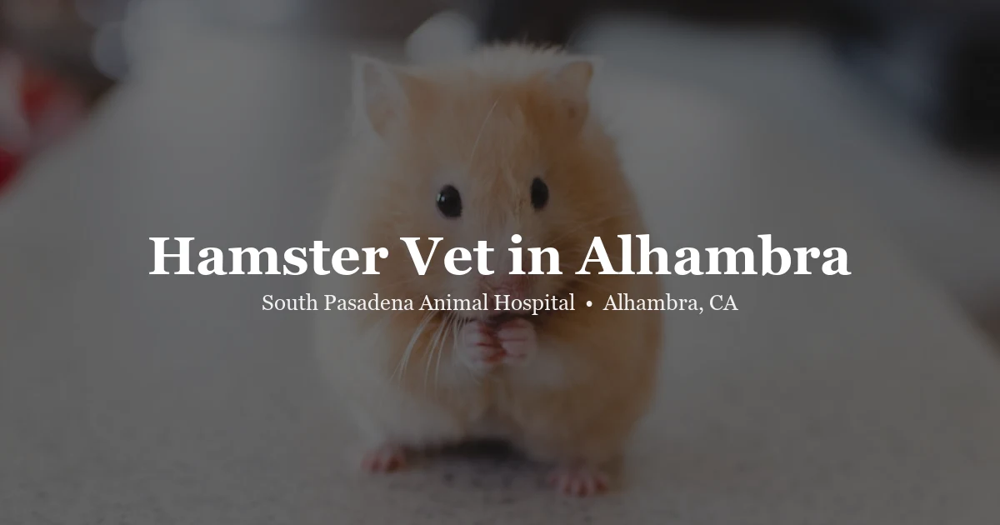

Hamsters are small but they have real medical needs. South Pasadena Animal Hospital provides complete hamster care — wellness exams, wet tail treatment, dental checks, respiratory infection care, and tumor evaluations. We see Syrian and dwarf hamsters and handle every patient with gentle, careful hands.

We understand hamster physiology, including their sensitivity to certain antibiotics, their short lifespan (meaning health changes happen fast), and the importance of catching issues early.
Wet tail (proliferative ileitis) is a bacterial GI infection that can be fatal within 48 hours. We diagnose and treat it promptly with appropriate antibiotics and supportive care.
Bloodwork and X-rays on-site mean faster answers for your hamster.
Full physical assessment: weight, teeth, skin, coat, eyes, heart and lung sounds, abdominal palpation.
Prompt diagnosis and treatment of proliferative ileitis with hamster-safe antibiotics and fluid support.
Assessment for overgrown incisors and cheek pouch issues. Hamsters' teeth grow continuously and can cause eating problems.
Diagnosis and treatment of upper respiratory infections, which are common in hamsters and can progress quickly.
Hamsters, especially females, are prone to tumors. We assess lumps and bumps and discuss treatment options.
Hamsters can impact their cheek pouches with sticky foods. We can safely empty impacted pouches.
The hardest part of hamster medicine is the clock. These are small animals with fast metabolisms, and a hamster that seems “a bit quiet” on Friday evening can be critically ill by Saturday morning. With a dog we can often watch a mild symptom overnight. With a hamster we usually can't, and that single difference drives almost everything we tell owners.
It doesn't help that hamsters are prey animals and nocturnal, so the two things working against early detection are baked in. Most owners see their hamster properly for a few minutes a day, often when it's just woken up and looks sleepy regardless. If something feels off, don't talk yourself out of it — call us at (626) 441-1314 the same day.
Wet tail is the emergency in young hamsters, particularly Syrians under about twelve weeks, and it moves brutally fast. The name undersells it — owners look for a wet tail, but what we're really describing is severe watery diarrhea, and by the time the rear end is visibly soaked the hamster is already dehydrated. Add a hunched posture, a rough staring coat, and a hamster that won't move much, and that's a today problem. Not tomorrow morning. The stress of a new home or a recent move is a common trigger, which is why we see it so often in hamsters bought within the last few weeks. Our post on wet tail in hamsters goes into what to watch for.
Hamsters get tumours, and they get them young — a two-year-old hamster is elderly. Most of what owners find is a mass along the flank, belly, or near a scent gland, and the honest answer is that we cannot tell you what it is by looking. Some are abscesses that resolve with treatment. Some are benign and slow. Some aren't. What we can tell you is that in an animal this size, a mass that doubles in a week is a very different conversation than one caught early, so “let's watch it for a month” is rarely the right call. Bring it in and let us look.
The other thing owners mistake for a lump is a stuffed cheek pouch that hasn't emptied. Pouch impaction is uncomfortable and fixable, but it needs someone to examine it properly — please don't try to empty a pouch at home, because the lining tears easily.
A surprising amount of hamster illness traces back to the setup rather than to bad luck. Cedar and pine shavings give off aromatic compounds that irritate the airways, and we still see them in use constantly — paper-based bedding is the straightforward swap. Wire-floored cages cause sore hocks and caught limbs. Enclosures that are too small drive the repetitive bar-chewing and cage-circling owners often read as personality.
Southern California heat matters too. Hamsters cope badly above roughly 80°F, and a cage sitting in afternoon sun through an Alhambra window in August is genuinely dangerous. A hamster that's flat, unresponsive, and warm to the touch needs help immediately. And a Syrian hamster housed with another Syrian will fight, sometimes fatally — they are solitary animals, whatever the pet store said.
Watery diarrhea or a wet, soiled rear. Not eating or drinking for more than about 12 hours. Laboured or clicking breathing. A new or fast-growing lump. Wobbliness, circling, or a head tilt. Bleeding anywhere. A hamster that's cold, flat, or unresponsive. Hamsters don't leave much runway, so with any of these we'd rather hear from you early and find nothing wrong. We see hamsters, gerbils, mice, and rats as part of our everyday exotic caseload — more on what we offer as an exotic vet near you.
Visit us at 3116 W Main St in Alhambra, just west of the Fremont Avenue intersection. Easy street parking is available right out front.
Monday – Friday: 8:00 AM – 1:00 PM & 2:00 PM – 6:00 PM
Saturday – Sunday: Closed
Closed for lunch 1–2 PM everyday.
Yes. Hamsters, gerbils, mice, and rats are part of our everyday caseload at 3116 W Main St in Alhambra. Small rodents are the species most often turned away by general practices, partly because they're small and fragile and partly because they deteriorate fast — which is exactly why we'd rather you called us early. (626) 441-1314.
Exam fees are published on our pricing page so you can plan ahead. Beyond the exam it depends on what's needed — a skin scrape for mites is different from working up a fast-growing mass. We'll discuss the cost with you before anything is done.
At least once a year for a wellness exam. Hamsters have short lifespans (2–3 years), so a lot can change quickly. If you notice any behavioral change, weight loss, or physical symptoms, don’t wait for the annual — come in sooner.
Yes. Wet tail is a bacterial infection of the intestinal tract that causes severe diarrhea, lethargy, and a visibly wet rear end. It can kill a hamster in 24–48 hours without treatment. If your hamster has wet tail symptoms, call us immediately or go to an emergency vet if we’re closed.
Possibly. Lumps in hamsters are common and can be anything from a cyst to a tumor. Female hamsters are particularly prone to mammary tumors. We’ll assess the lump, discuss whether diagnostics are warranted, and go over your options.
Yes — hamsters are one of the few pets that can catch human colds. If you have a cold, wash your hands thoroughly before handling your hamster and minimize face-to-face contact until you’re better.
Avoid citrus fruits, onions, garlic, raw potatoes, chocolate, and almonds. Sticky foods like gummy candies can impact cheek pouches. Lots of seeds and pellets without sufficient fresh vegetables can contribute to diabetes in dwarf hamsters.
Schedule your hamster’s appointment online in under a minute, or give us a call and our team will find a time that works for you.
If you are searching for a hamster vet in Alhambra or the San Gabriel Valley, South Pasadena Animal Hospital is here to help. Located at 3116 West Main Street in Alhambra, our clinic regularly sees hamsters for wellness exams, illness treatment, and preventive care. Unlike many general veterinary practices that rarely treat small rodents, our veterinarians are comfortable with hamster medicine and understand the critical differences between hamster care and care for other small animals.
One of the most important things to understand about hamsters is how quickly they can deteriorate when ill. With a lifespan of only 2–3 years, a hamster that appears slightly off today can be critically ill by tomorrow. Wet tail, respiratory infections, and tumors all require prompt attention. Our team prioritizes same-week or same-day appointments for hamsters showing signs of illness.
We see both Syrian (golden) hamsters and dwarf hamster varieties, including Roborovski, Campbell’s, and Winter White hamsters. Each has slightly different husbandry needs, and we tailor our recommendations accordingly. We also perform all diagnostics in-house — bloodwork and X-rays are available on-site — so we can diagnose and begin treatment the same day.
Hamster owners come to SPAH from across the region, including Pasadena, South Pasadena, San Gabriel, Monterey Park, Temple City, and Rosemead. If your hamster needs a checkup or is showing signs of illness, contact us to schedule an appointment.